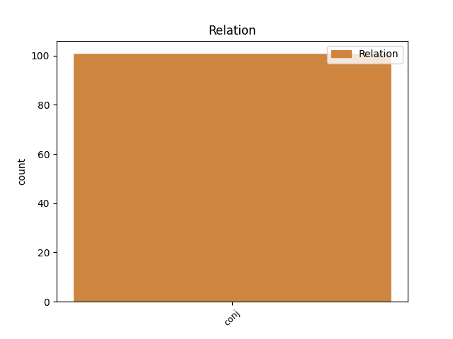
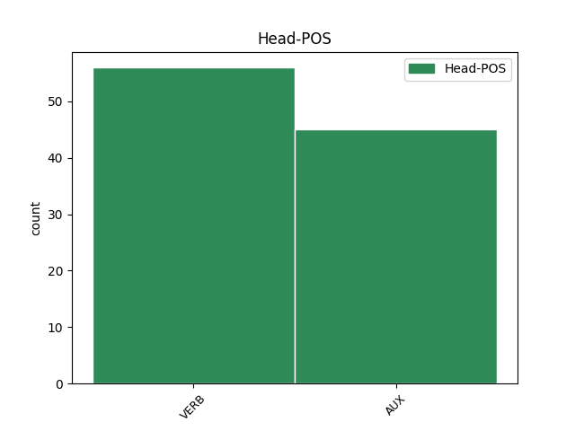
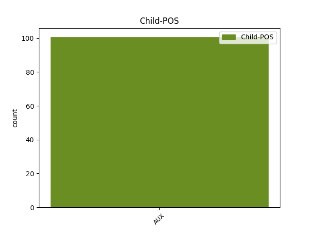

Distribution of features within this leaf



Agreement Rules sorted by frequency.
- When the dependent token is the conjunct(conj) of the head token, and the head token is VERB and the dependent token is AUX.
1 Tunnista _ _ _ _ 0 _ _ _
2 fronius _ _ _ _ 0 _ _ _
3 , _ _ _ _ 0 _ _ _
4 et _ _ _ _ 0 _ _ _
5 võta võtma VERB V Mood=Imp|Number=Sing|Person=2|Tense=Pres|VerbForm=Fin|Voice=Act 0 _ _ _
6 mis _ _ _ _ 0 _ _ _
7 klots _ _ _ _ 0 _ _ _
8 tahes _ _ _ _ 0 _ _ _
9 kuid _ _ _ _ 0 _ _ _
10 ühest _ _ _ _ 0 _ _ _
11 nurgast _ _ _ _ 0 _ _ _
12 on olema AUX V Mood=Ind|Number=Plur|Person=3|Tense=Pres|VerbForm=Fin|Voice=Act 5 conj _ _
13 nad _ _ _ _ 0 _ _ _
14 kõik _ _ _ _ 0 _ _ _
15 pahnad _ _ _ _ 0 _ _ _
16 :D _ _ _ _ 0 _ _ _
1 1 _ _ _ _ 0 _ _ _
2 ei _ _ _ _ 0 _ _ _
3 ole olema AUX V Connegative=Yes|Mood=Ind|Tense=Pres|VerbForm=Fin|Voice=Act 0 _ _ _
4 massiline _ _ _ _ 0 _ _ _
5 , _ _ _ _ 0 _ _ _
6 ja _ _ _ _ 0 _ _ _
7 võttes _ _ _ _ 0 _ _ _
8 konsentratsiooniks _ _ _ _ 0 _ _ _
9 see _ _ _ _ 0 _ _ _
10 siin _ _ _ _ 0 _ _ _
11 + _ _ _ _ 0 _ _ _
12 froniuse _ _ _ _ 0 _ _ _
13 oma _ _ _ _ 0 _ _ _
14 siis _ _ _ _ 0 _ _ _
15 on olema AUX V Mood=Ind|Number=Sing|Person=3|Tense=Pres|VerbForm=Fin|Voice=Act 3 conj _ _
16 see _ _ _ _ 0 _ _ _
17 väga _ _ _ _ 0 _ _ _
18 väike _ _ _ _ 0 _ _ _
19 konsentratsioon _ _ _ _ 0 _ _ _
20 . _ _ _ _ 0 _ _ _
Disagree Examples:
1 See _ _ _ _ 0 _ _ _
2 oli olema AUX V Mood=Ind|Number=Sing|Person=3|Tense=Past|VerbForm=Fin|Voice=Act 0 _ _ _
3 lühike _ _ _ _ 0 _ _ _
4 kokkuvõte _ _ _ _ 0 _ _ _
5 , _ _ _ _ 0 _ _ _
6 teema _ _ _ _ 0 _ _ _
7 käsitlus _ _ _ _ 0 _ _ _
8 on olema AUX V Mood=Ind|Number=Sing|Person=3|Tense=Pres|VerbForm=Fin|Voice=Act 2 conj _ _
9 pikem _ _ _ _ 0 _ _ _
10 ja _ _ _ _ 0 _ _ _
11 sel _ _ _ _ 0 _ _ _
12 on _ _ _ _ 0 _ _ _
13 ka _ _ _ _ 0 _ _ _
14 teinepool _ _ _ _ 0 _ _ _
15 . _ _ _ _ 0 _ _ _
1 saada _ _ _ _ 0 _ _ _
2 pe*rse _ _ _ _ 0 _ _ _
3 , _ _ _ _ 0 _ _ _
4 otsi _ _ _ _ 0 _ _ _
5 uued _ _ _ _ 0 _ _ _
6 sõbrad _ _ _ _ 0 _ _ _
7 , _ _ _ _ 0 _ _ _
8 keda _ _ _ _ 0 _ _ _
9 saad _ _ _ _ 0 _ _ _
10 usaldada _ _ _ _ 0 _ _ _
11 .. _ _ _ _ 0 _ _ _
12 sa _ _ _ _ 0 _ _ _
13 nimetad _ _ _ _ 0 _ _ _
14 neid _ _ _ _ 0 _ _ _
15 sõpradeks _ _ _ _ 0 _ _ _
16 ? _ _ _ _ 0 _ _ _
17 maybe _ _ _ _ 0 _ _ _
18 üritavad _ _ _ _ 0 _ _ _
19 nalja _ _ _ _ 0 _ _ _
20 teha _ _ _ _ 0 _ _ _
21 , _ _ _ _ 0 _ _ _
22 aga _ _ _ _ 0 _ _ _
23 ma _ _ _ _ 0 _ _ _
24 ise _ _ _ _ 0 _ _ _
25 olen _ _ _ _ 0 _ _ _
26 ka _ _ _ _ 0 _ _ _
27 suht _ _ _ _ 0 _ _ _
28 seda _ _ _ _ 0 _ _ _
29 tunda _ _ _ _ 0 _ _ _
30 saanud _ _ _ _ 0 _ _ _
31 .. _ _ _ _ 0 _ _ _
32 no _ _ _ _ 0 _ _ _
33 nad _ _ _ _ 0 _ _ _
34 tegid _ _ _ _ 0 _ _ _
35 nalja _ _ _ _ 0 _ _ _
36 ka _ _ _ _ 0 _ _ _
37 , _ _ _ _ 0 _ _ _
38 aga _ _ _ _ 0 _ _ _
39 see _ _ _ _ 0 _ _ _
40 läks minema VERB V Mood=Ind|Number=Sing|Person=3|Tense=Past|VerbForm=Fin|Voice=Act 0 _ _ _
41 hinge _ _ _ _ 0 _ _ _
42 , _ _ _ _ 0 _ _ _
43 aga _ _ _ _ 0 _ _ _
44 nüüd _ _ _ _ 0 _ _ _
45 oleme olema AUX V Mood=Ind|Number=Plur|Person=1|Tense=Pres|VerbForm=Fin|Voice=Act 40 conj _ _
46 suuremaks _ _ _ _ 0 _ _ _
47 kasvanud _ _ _ _ 0 _ _ _
48 . _ _ _ _ 0 _ _ _
1 pani panema VERB V Mood=Ind|Number=Sing|Person=3|Tense=Past|VerbForm=Fin|Voice=Act 0 _ _ _
2 mingi _ _ _ _ 0 _ _ _
3 naeru _ _ _ _ 0 _ _ _
4 märgi _ _ _ _ 0 _ _ _
5 ka _ _ _ _ 0 _ _ _
6 veel _ _ _ _ 0 _ _ _
7 nii _ _ _ _ 0 _ _ _
8 vastik _ _ _ _ 0 _ _ _
9 on olema AUX V Mood=Ind|Number=Sing|Person=3|Tense=Pres|VerbForm=Fin|Voice=Act 1 conj _ _
10 olla _ _ _ _ 0 _ _ _
11 , _ _ _ _ 0 _ _ _
12 kooklis _ _ _ _ 0 _ _ _
13 ka _ _ _ _ 0 _ _ _
14 mingi _ _ _ _ 0 _ _ _
15 küikk _ _ _ _ 0 _ _ _
16 pelgavad _ _ _ _ 0 _ _ _
17 mind _ _ _ _ 0 _ _ _
18 jja _ _ _ _ 0 _ _ _
19 sosistavad _ _ _ _ 0 _ _ _
20 minu _ _ _ _ 0 _ _ _
21 ees _ _ _ _ 0 _ _ _
22 Mis _ _ _ _ 0 _ _ _
23 ma _ _ _ _ 0 _ _ _
24 neile _ _ _ _ 0 _ _ _
25 ütlema _ _ _ _ 0 _ _ _
26 pean _ _ _ _ 0 _ _ _
27 ? _ _ _ _ 0 _ _ _
28 nad _ _ _ _ 0 _ _ _
29 ütlevad _ _ _ _ 0 _ _ _
30 mulle _ _ _ _ 0 _ _ _
31 migni _ _ _ _ 0 _ _ _
32 loll _ _ _ _ 0 _ _ _
33 sõber _ _ _ _ 0 _ _ _
34 ausõna _ _ _ _ 0 _ _ _
35 ! _ _ _ _ 0 _ _ _
1 **samas _ _ _ _ 0 _ _ _
2 ei _ _ _ _ 0 _ _ _
3 saa saama AUX V Connegative=Yes|Mood=Ind|Tense=Pres|VerbForm=Fin|Voice=Act 0 _ _ _
4 väita _ _ _ _ 0 _ _ _
5 , _ _ _ _ 0 _ _ _
6 et _ _ _ _ 0 _ _ _
7 nende _ _ _ _ 0 _ _ _
8 elu _ _ _ _ 0 _ _ _
9 seal _ _ _ _ 0 _ _ _
10 folderites _ _ _ _ 0 _ _ _
11 kehvem _ _ _ _ 0 _ _ _
12 oleks _ _ _ _ 0 _ _ _
13 olnud _ _ _ _ 0 _ _ _
14 kui _ _ _ _ 0 _ _ _
15 teistel _ _ _ _ 0 _ _ _
16 , _ _ _ _ 0 _ _ _
17 näiteks _ _ _ _ 0 _ _ _
18 hygieenitingimused _ _ _ _ 0 _ _ _
19 olid olema AUX V Mood=Ind|Number=Plur|Person=3|Tense=Past|VerbForm=Fin|Voice=Act 3 conj _ _
20 neil _ _ _ _ 0 _ _ _
21 väga _ _ _ _ 0 _ _ _
22 head _ _ _ _ 0 _ _ _
23 - _ _ _ _ 0 _ _ _
24 dushi _ _ _ _ 0 _ _ _
25 alla _ _ _ _ 0 _ _ _
26 said _ _ _ _ 0 _ _ _
27 nad _ _ _ _ 0 _ _ _
28 minna _ _ _ _ 0 _ _ _
29 palju _ _ _ _ 0 _ _ _
30 tihemini _ _ _ _ 0 _ _ _
31 kui _ _ _ _ 0 _ _ _
32 teised _ _ _ _ 0 _ _ _
33 . _ _ _ _ 0 _ _ _
1 kes _ _ _ _ 0 _ _ _
2 ta _ _ _ _ 0 _ _ _
3 yldse _ _ _ _ 0 _ _ _
4 on _ _ _ _ 0 _ _ _
5 , _ _ _ _ 0 _ _ _
6 et _ _ _ _ 0 _ _ _
7 ta _ _ _ _ 0 _ _ _
8 niimoodi _ _ _ _ 0 _ _ _
9 sinatama _ _ _ _ 0 _ _ _
10 tuleb _ _ _ _ 0 _ _ _
11 ? _ _ _ _ 0 _ _ _
12 minu _ _ _ _ 0 _ _ _
13 arust _ _ _ _ 0 _ _ _
14 meid _ _ _ _ 0 _ _ _
15 tutvustatud tutvustama VERB V Tense=Past|VerbForm=Part|Voice=Pass 0 _ _ _
16 ei _ _ _ _ 0 _ _ _
17 ole _ _ _ _ 0 _ _ _
18 ja _ _ _ _ 0 _ _ _
19 koos _ _ _ _ 0 _ _ _
20 joonud _ _ _ _ 0 _ _ _
21 ma _ _ _ _ 0 _ _ _
22 taga _ _ _ _ 0 _ _ _
23 kah _ _ _ _ 0 _ _ _
24 pole olema AUX V Mood=Ind|Polarity=Neg|Tense=Pres|VerbForm=Fin|Voice=Act 15 conj _ SpaceAfter=No
25 . _ _ _ _ 0 _ _ _